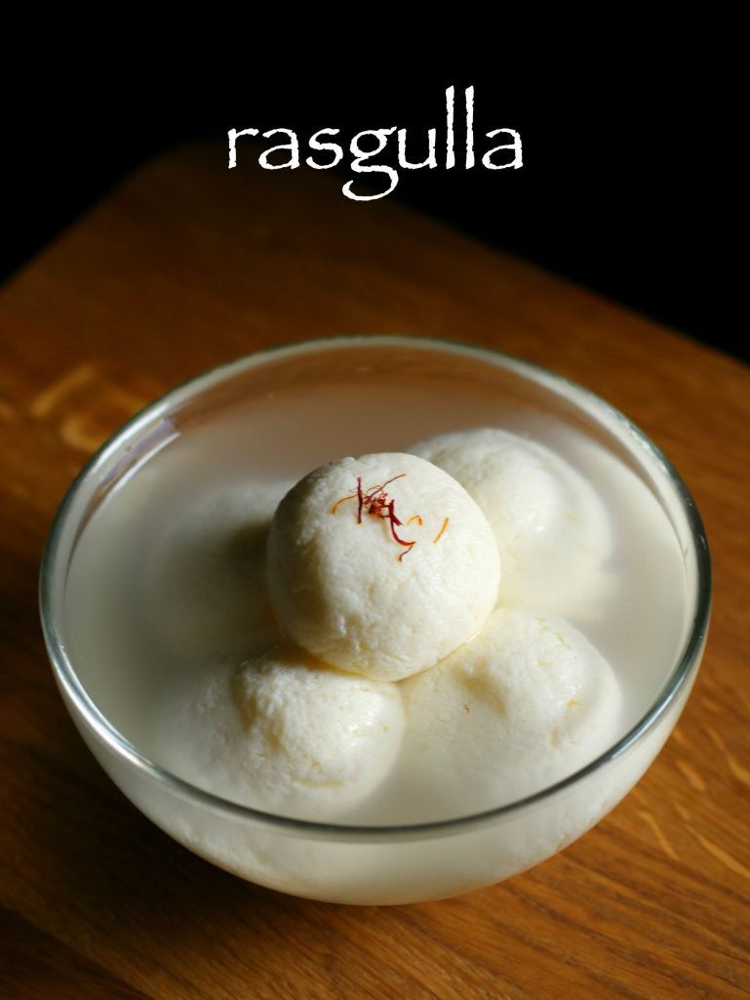

Rasgulla
Ingredients
- 1 litre milk, full cream cows milk
- 2 tbsp lemon juice
- 1 cup water
- 1 cup sugar
- 8 cups water
Method:
- Firstly, in a thick bottomed pan add 1 litre milk.
- Furthermore, stir occasionally and get to a boil.
- Additionally, add lemon juice and stir well.
- Add more lemon juice and stir till milk curdles completely.
- And immediately drain the curdled milk into the hand kerchief.
- Pour a cup of water and clean the paneer as it has lemon juice in it.
- Furthermore, bring it together and squeeze off excess water.
- Hang for 30 minutes. Or till all the water drains off completely.
- After 30 minutes, start to knead the paneer.
- Knead paneer till it turns out smooth without any grains of milk.
- Furthermore, make small balls of paneer and keep aside.
- Firstly, in a deep vessel take 1 cup of sugar.
- Furthermore, add 8 glasses of water and stir well.
- Boil the syrup for 10 minutes on medium flame.
- After that, drop the prepared paneer balls into boiling sugar syrup.
- Cover and boil for 15 minutes. The paneer balls will have doubled in size.
- Furthermore, keep aside till it cools completely and then refrigerate.
- Finally, serve rasgulla chilled or at room temperature garnished with few saffron strands.